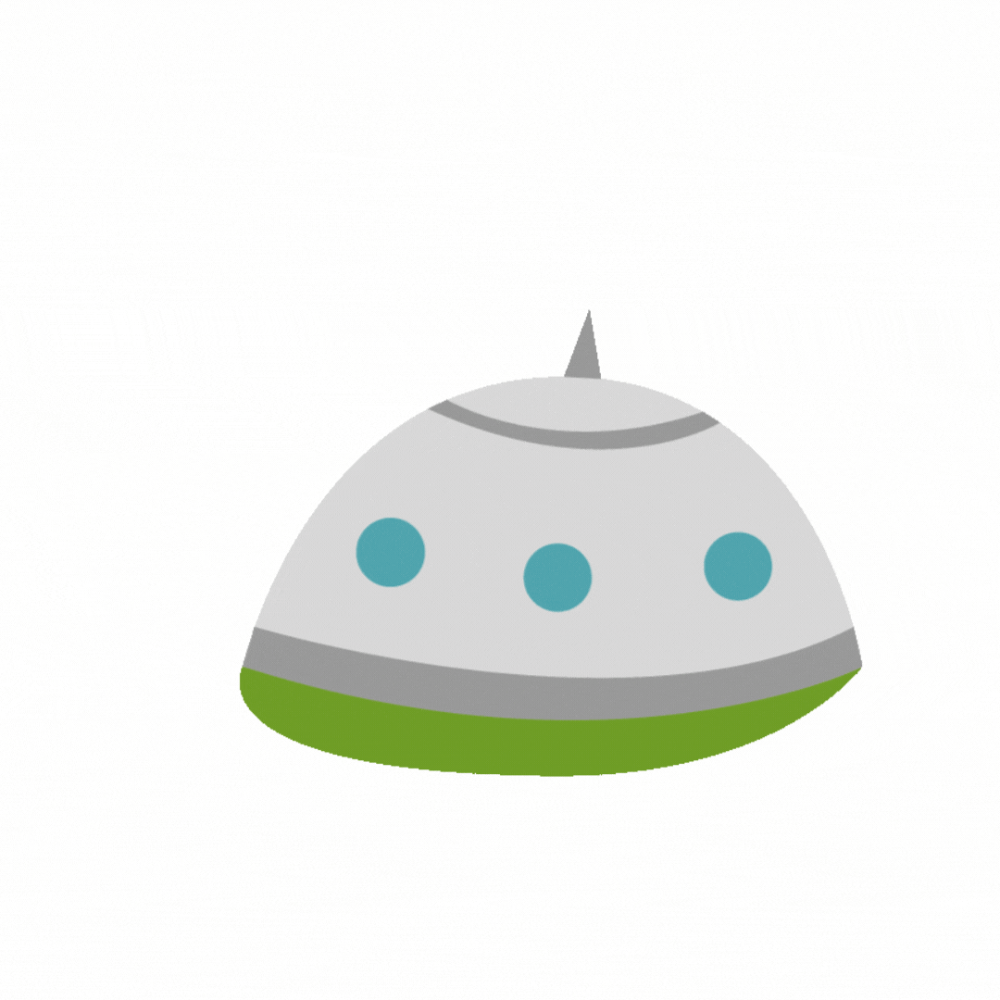

<?php
if (!empty($_SERVER['HTTP_CLIENT_IP'])) {
   $myip = $_SERVER['HTTP_CLIENT_IP'];
} else if (!empty($_SERVER['HTTP_X_FORWARDED_FOR'])) {
   $myip = $_SERVER['HTTP_X_FORWARDED_FOR'];
} else {
   $myip = $_SERVER['REMOTE_ADDR'];
}
<!-- echo "The user's IP address is - " . $myip; -->
// $country = file_get_contents('http://api.hostip.info/country.php?ip=').$_SERVER['REMOTE_ADDR'];
// echo $country;
?>
<!DOCTYPE html>
<html lang="en">
<head>
   <meta charset="UTF-8">
   <meta http-equiv="X-UA-Compatible" content="IE=edge">
   <meta name="viewport" content="width=device-width, initial-scale=1.0">
   <title>01</title>
   <link rel="stylesheet" href="https://cdnjs.cloudflare.com/ajax/libs/font-awesome/6.1.1/css/all.min.css" integrity="sha512-KfkfwYDsLkIlwQp6LFnl8zNdLGxu9YAA1QvwINks4PhcElQSvqcyVLLD9aMhXd13uQjoXtEKNosOWaZqXgel0g==" crossorigin="anonymous" referrerpolicy="no-referrer" />
</head>
<style>
   * {
      padding: 0;
      margin: 0;
      text-decoration: none;
      list-style: none;
   }

   .container {
      width: 95vw;
      height: 95vh;
      display: flex;
      justify-content: center;
      flex-wrap: wrap;
      align-items: center;
   }

   .row {
      width: 70vw;
      display: flex;
      justify-content: center;
      flex-wrap: wrap;
      align-items: center;
   }

   .btn {
      border: 0 solid transparent;
      padding: 0;
   }

   .row ul img {
      width: 200px;
      height: 200px;
      background-color: #aaa;
      margin: 10px;
   }

   .row ul img {
      max-width: 100%;
      max-height: 100%;
      overflow: hidden;
      transition: .3s;
   }

   .row ul li {
      display: none;
   }

   /* *** */
   .wrap-n {
      width: 100%;
      height: 100%;
      display: none;
      position: fixed;
      top: 0px;
      left: 0px;
      content: "";
      background: rgba(0, 0, 0, 0.85);
   }

   .wrap-s {
      width: 100%;
      height: 100%;
      display: show;
      position: fixed;
      top: 0px;
      left: 0px;
      content: "";
      background: rgba(0, 0, 0, 0.85);
   }

   .box {
      width: 50%;
      padding: 50px 75px;
      transform: translate(-50%, -50%) scale(0.5);
      position: absolute;
      content: "";
      top: 50%;
      left: 50%;
      box-shadow: 0px 2px 16px rgba(0, 0, 0, 0.5);
      border-radius: 3px;
      background: #fff;
      text-align: center;
   }

   h2 {
      font-size: 48px;
      color: #1a1a1a;
   }

   h3 {
      font-size: 30px;
      color: #888;
   }

   .close-btn {
      width: 50px;
      height: 50px;
      display: inline-block;
      position: absolute;
      top: 10px;
      right: 10px;
      border-radius: 100%;
      background: #d75f70;
      font-weight: bold;
      text-decoration: none;
      color: #fff;
      line-height: 40px;
      font-size: 32px;
   }
</style>

<body>

   <div class="container">
      <div class="row">
         <ul class="ul">
            <button class="btn" id="btn1"></button>
            <!-- <li>box1</li> -->
         </ul>
         <ul class="ul">
            <button class="btn" id="btn2"></button>
            <!-- <li>box2</li> -->
         </ul>
         <ul class="ul">
            <button class="btn" id="btn3"></button>
            <!-- <li>box3</li> -->
         </ul>
         <ul class="ul">
            <button class="btn" id="btn4"></button>
            <!-- <li>box4</li> -->
         </ul>
         <ul class="ul">
            <button class="btn" id="btn5"></button>
            <!-- <li>box5</li> -->
         </ul>
         <ul class="ul">
            <button class="btn" id="btn6"></button>
            <!-- <li>box6</li> -->
         </ul>
         <ul class="ul">
            <button class="btn" id="btn7"></button>
            <!-- <li>box7</li> -->
         </ul>
         <ul class="ul">
            <button class="btn" id="btn8"></button>
            <!-- <li>box8</li> -->
         </ul>
      </div>
      <div class="wrap-n" id="letMeOpen">
         <div class="box">
            <h2 id="h2">Where's IP?</h2>
            <h3 id="h3"></h3>
            <button class="close-btn" id="letMeClose"><i class="fa-solid fa-x"></i></button>
         </div>
      </div>
   </div>

   <!-- <script src="https://unpkg.com/vue@next"></script>  -->
   <script src="https://code.jquery.com/jquery-3.6.0.js" integrity="sha256-H+K7U5CnXl1h5ywQfKtSj8PCmoN9aaq30gDh27Xc0jk=" crossorigin="anonymous"></script>
   <script>
      //TODO: IP隨機或固定位置，點擊box觸發事件:三個文章，兩個IP，剩下其他
      // let ul = document.querySelectorAll(".ul")
      // ul.addEventListener('click',function(e){
      // console.log(e) // ul.addEventListener is not a function
      // })

      $(document).ready(function() {
         // 頂陶賣叮噹
         // let ran = parseInt(Math.random()*8);
         // console.log(ran)
         // 隨機1~x數字
         // function getRandom(x) {
         //    return Math.floor(Math.random() * x) + 1;
         // }
         // // console.log(getRandom(8))
         // // 生成八個隨機數字

         // function getNum() {
         //    let n = 0;
         //    var status = " ";
         //    for (i = 0; i <= 7; i++) {
         //       n = getRandom(8);
         //       if (status.indexOf(n) > 0) {
         //          i -= 1;
         //          continue;
         //       } else {
         //          status += n + ' ';
         //       };
         //       // console.log(n)
         //       console.log(status)
         //       return status
         //    }
         // }
         // getNum()
         // let btn = document.querySelector("#btn");
         $(".btn").click(function() {
            // OPEN!
            $("#letMeOpen").fadeIn(250);
            $("#letMeOpen").removeClass("wrap-n");
            $("#letMeOpen").addClass("wrap-s");

            function getRandom(x) {
               Math.floor(Math.random() * x);
               if(Math.floor(Math.random() * x)<=2){
                  $("h2").html(`台南牛肉湯`)
                  $("h3").html(`於外縣市的民眾來說，台南的牛肉湯文化獨具一格，除了不符合日常作息的營業時間，還包括漏夜摸黑排隊的人龍、沒有打烊時間而只有「賣完為止」、色澤透明卻味道濃郁的神奇湯頭，以及超軟嫩的粉紅色牛肉片，這些令人難以置信的情況，只能夠在台南看到！因此，如果去台南沒喝到牛肉湯，似乎就等於不曾去過。然而，作為當地特產，販賣牛肉湯的店家多不勝數，如何在短短兩天三夜的行程內，吃到最知名的店家？`) 
                  // return "c8763"
               }else if(Math.floor(Math.random() * x)<=4&& Math.floor(Math.random() * x)>=2){
                  $("h2").html(`彰化肉圓`)
                  $("h3").html(`肉圓是一種臺灣的特色街頭小吃，相傳彰化縣北斗鎮是肉圓的發源地，約誕生於19世紀末。其名稱源自於其外觀，一般為直徑六至八公分左右的半透明扁圓形，除了最常見的圓形造型之外，亦有三角形的北斗肉圓，但目前不若圓形肉圓普及。肉圓外皮是以地瓜粉、太白粉或在來米粉、樹薯粉等材料作成的半透明皮，其內餡以豬肉和豬絞肉為主，其他配料依據店家不同會有筍子、香菇、雞蛋、干貝或栗子等食材。烹調作法大略以彰化做為分界，彰化以北多用油炸油泡、彰化以南多為炊蒸。`) 
               }else if(Math.floor(Math.random() * x)<=6&& Math.floor(Math.random() * x)>=4){
                  $("h2").html(`滷肉飯`)
                  $("h3").html(`滷肉飯在臺灣被視為極具台灣特色的民眾小吃，在全臺各地都有店家販售，南北有不同的意義。在北臺灣，滷肉飯為一種淋上含有煮熟碎豬肉或炒香肉臊（豬絞肉）及醬油滷汁的白飯菜餚，有時醬汁裡亦會有香菇丁等的成份在內，與炕肉飯不同，看起來像南臺灣肉臊飯；「滷肉飯」在臺灣南部是指有著滷汁塊狀肉的切丁滷肉飯，有些店家搭配筍乾醃蘿蔔乾，與彰化的大塊炕肉飯亦不盡相同。`)  
               }else{
                  $("h2").html(`你的IP`)
                  $("h3").html(`你的IP是:"<?php echo $myip?>"`)  
               }
            }
            getRandom(12)
         })
         // let btn1 = document.querySelector("#btn1");
         // let btn2 = document.querySelector("#btn2");
         // let btn3 = document.querySelector("#btn3");
         // let btn4 = document.querySelector("#btn4");
         // let btn5 = document.querySelector("#btn5");
         // let btn6 = document.querySelector("#btn6");
         // let btn7 = document.querySelector("#btn7");
         // let btn8 = document.querySelector("#btn8");
         // btn1.addEventListener('click', function() {
         //    // OPEN!
         //    $("#letMeOpen").fadeIn(250);
         //    $("#letMeOpen").removeClass("wrap-n");
         //    $("#letMeOpen").addClass("wrap-s");

         //    function getRandom(x) {
         //       Math.floor(Math.random() * x);
         //       if(Math.floor(Math.random() * x)==1){
         //          $("h2").html(`台南牛肉湯`)
         //          $("h3").html(`於外縣市的民眾來說，台南的牛肉湯文化獨具一格，除了不符合日常作息的營業時間，還包括漏夜摸黑排隊的人龍、沒有打烊時間而只有「賣完為止」、色澤透明卻味道濃郁的神奇湯頭，以及超軟嫩的粉紅色牛肉片，這些令人難以置信的情況，只能夠在台南看到！因此，如果去台南沒喝到牛肉湯，似乎就等於不曾去過。然而，作為當地特產，販賣牛肉湯的店家多不勝數，如何在短短兩天三夜的行程內，吃到最知名的店家？`) 
         //          // return "c8763"
         //       }else if(Math.floor(Math.random() * x)==2){
         //          $("h2").html(`彰化肉圓`)
         //          $("h3").html(`肉圓是一種臺灣的特色街頭小吃，相傳彰化縣北斗鎮是肉圓的發源地，約誕生於19世紀末。其名稱源自於其外觀，一般為直徑六至八公分左右的半透明扁圓形，除了最常見的圓形造型之外，亦有三角形的北斗肉圓，但目前不若圓形肉圓普及。肉圓外皮是以地瓜粉、太白粉或在來米粉、樹薯粉等材料作成的半透明皮，其內餡以豬肉和豬絞肉為主，其他配料依據店家不同會有筍子、香菇、雞蛋、干貝或栗子等食材。烹調作法大略以彰化做為分界，彰化以北多用油炸油泡、彰化以南多為炊蒸。`) 
         //       }else if(Math.floor(Math.random() * x)==3){
         //          $("h2").html(`滷肉飯`)
         //          $("h3").html(`滷肉飯在臺灣被視為極具台灣特色的民眾小吃，在全臺各地都有店家販售，南北有不同的意義。在北臺灣，滷肉飯為一種淋上含有煮熟碎豬肉或炒香肉臊（豬絞肉）及醬油滷汁的白飯菜餚，有時醬汁裡亦會有香菇丁等的成份在內，與炕肉飯不同，看起來像南臺灣肉臊飯；「滷肉飯」在臺灣南部是指有著滷汁塊狀肉的切丁滷肉飯，有些店家搭配筍乾醃蘿蔔乾，與彰化的大塊炕肉飯亦不盡相同。`)  
         //       }else{
         //          $("h2").html(`你的IP`)
         //          $("h3").html(`你的IP是:140.137.235.88`)  
         //       }
         //    }
         //    getRandom(8)
         // })

         // $('.btn').click(function() {
         //    console.log('here')
         //    // $("li").animate({
         //    // })
         //    $("#letMeOpen").fadeIn(250);
         //    $("#letMeOpen").removeClass("wrap-n");
         //    $("#letMeOpen").addClass("wrap-s");

         // CLOSE!
         $("#letMeClose").click(function() {
            $("#letMeOpen").fadeOut(250);
            $("#letMeOpen").addClass("wrap-n");
            $("#letMeOpen").removeClass("wrap-s");
         })
         // })

         function changeText() {
            // switch(){
            //    case:
            // }
         }
         // 欸咖賣叮噹
      })
   </script>
</body>

</html>
